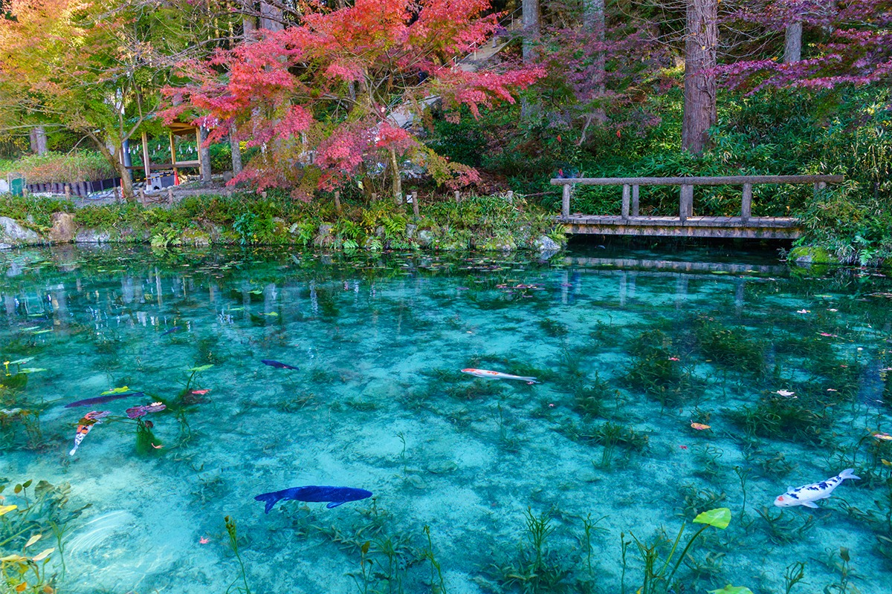
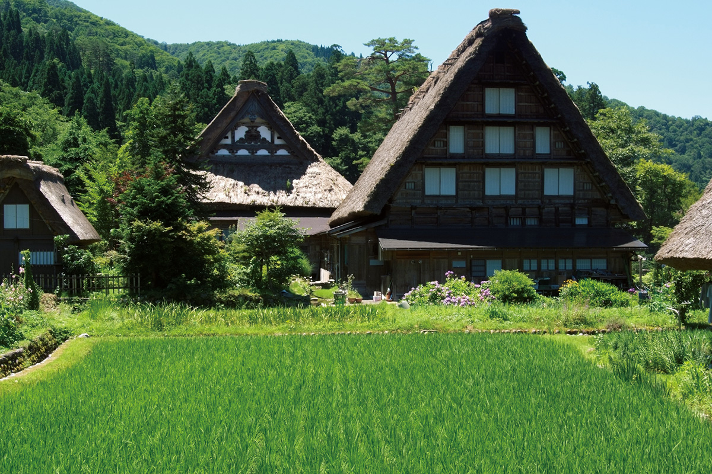
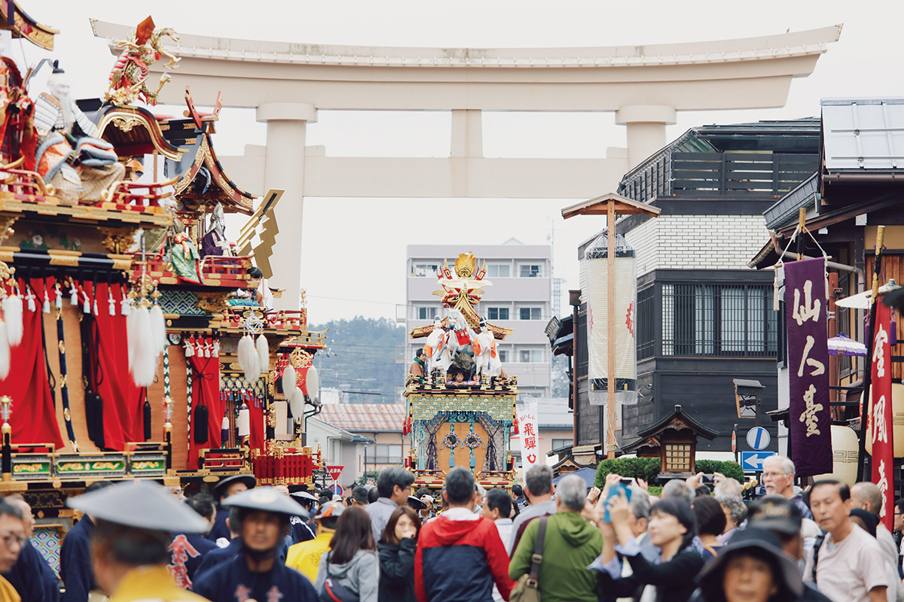
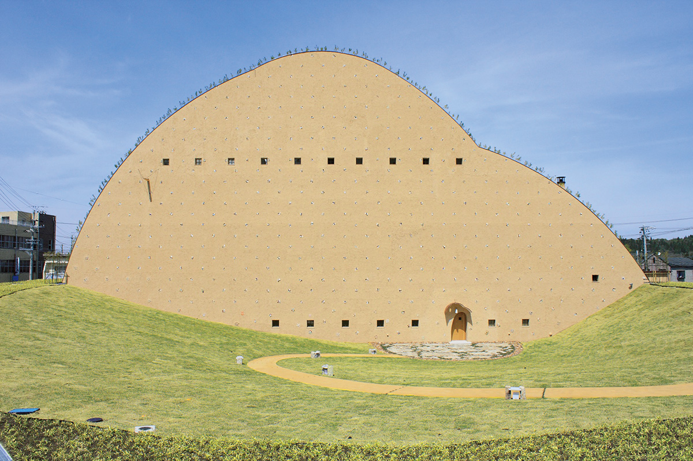
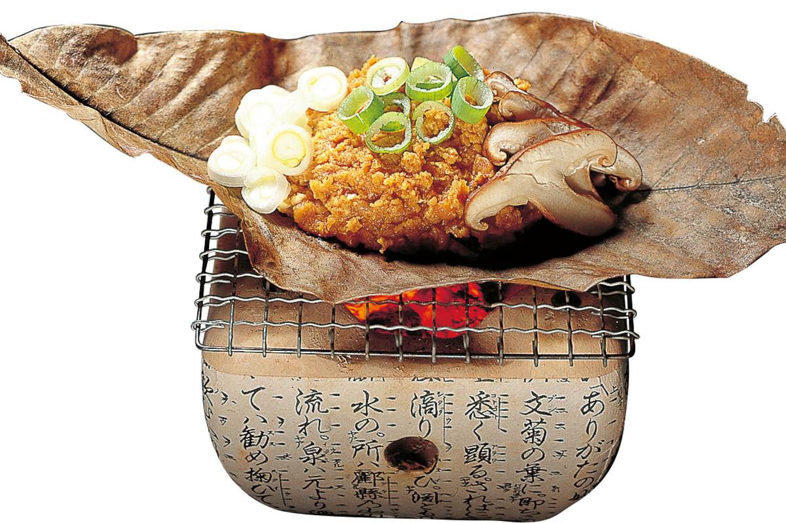
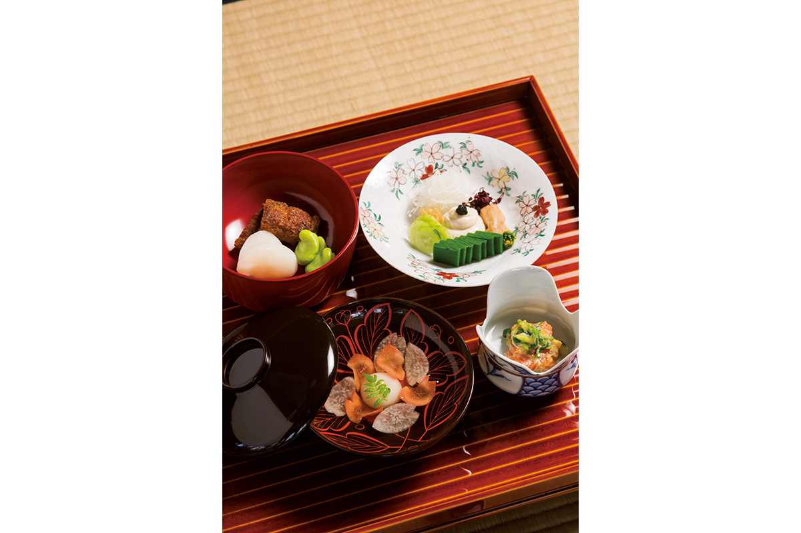
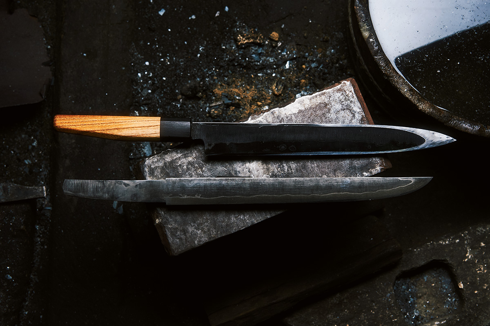
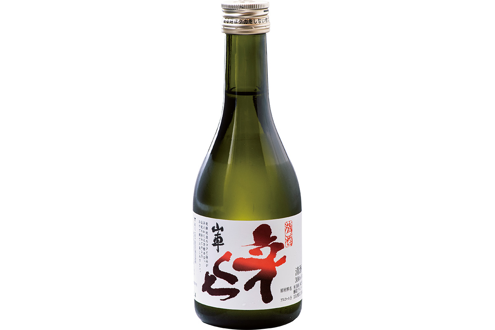
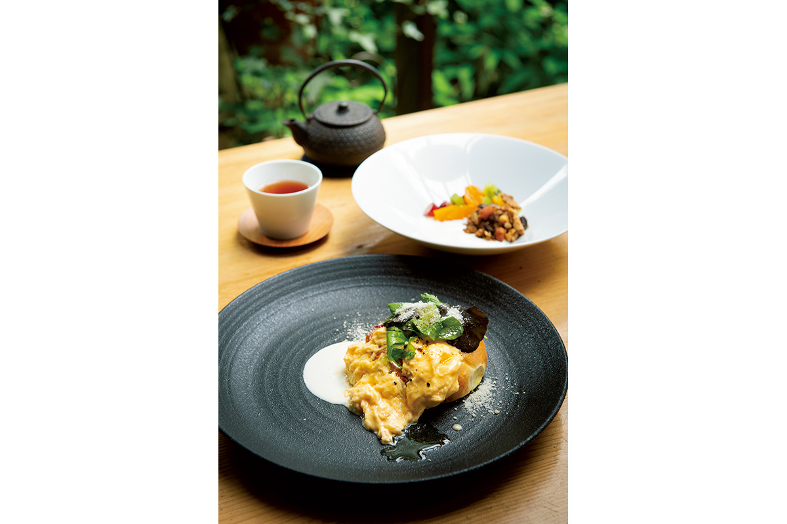

Префектура Гифу
Гифу: пуп Японии, где делают ножи и посуду

Пруд в Сэки: вода настолько прозрачная, что карпы кажутся висящими в воздухе, а по берегу уже краснеют клёны.
Здесь сходятся трёхтысячники и три большие реки, здесь куют ножи по традиции оружейников и обжигают посуду без глазури. Рассказываем, за чем ехать в префектуру Гифу.
О префектуре
Край в самом центре страны
Гифу лежит почти в центре Японии: город Сэки считается точкой демографического центра страны, то есть тем местом, где карта страны уравновесилась бы на острие. Северную часть, Хида, окружают горы выше трёх тысяч метров, среди них Онтакэ, Норикура и Оку-Хотака, а южную, Мино, прорезают три реки: Кисо, Иби и Нагара. Такой край здесь называют «летящие горы и густая вода»: высокие горы Хида и полноводные реки Мино.
Мастерство здесь древнее. На основе традиций, например керамики мино-яки, выросли местные промыслы, а сегодня в префектуре делают ткани, керамику и фарфор, мебель и изделия из дерева, ножи, бумагу, пластик и еду.
Название префектуры, по преданию, выбрал Ода Нобунага, полководец XVI века и первый из трёх объединителей Японии: дзэнский монах Савагэн Соон предложил ему три варианта из китайских преданий, и Нобунага остановился на «Гифу». Есть и другие версии. Эмблема префектуры построена на первом иероглифе её названия и круге, который означает мир и согласие.
Что посмотреть
Деревня, где крыши складывают как ладони
Сиракаваго
В деревне Сиракаваго сохранилось больше ста домов с крутыми соломенными крышами, которые называют гассё-дзукури, то есть «сложенные как ладони»: два ската сходятся под острым углом, и снег сам сползает с крыши. В домах по-прежнему живут люди, и это один из самых узнаваемых пейзажей старой Японии: здесь чувствуешь настоящий деревенский быт.

- Телефон
- +81 5769-6-1013
- Справки
- туристическая ассоциация Сиракаваго
Что ещё посмотреть
- Сэкигахара, поле битвы 1600 года, где решалась судьба страны
- Замок Гифу, крепость на скале над городом
- Старый город Такаямы, улицы с деревянными домами и лавками
Праздники
Праздник, где везут «движущиеся ворота»
Такаяма-мацури
Праздник идёт дважды в год, весной и осенью. По улицам выкатывают праздничные платформы ятай, которые называют «движущимися воротами Ёмэймон» за густую резьбу и золото. Вечером на каждой платформе зажигают десятки фонарей, и город становится похож на огромный фонарь.

- Период
- 14 и 15 апреля, весенний праздник Санно; 9 и 10 октября, осенний праздник Хатиман
- Место
- город Такаяма
Другие праздники
- Гудзё-одори, летние танцы, которые идут больше тридцати ночей подряд
- Праздник Нобунаги в Гифу, шествие в исторических костюмах
- Праздник в Фукаве, зимний праздник с барабанами и высокими украшениями
Музеи и архитектура
Музей, который прикинулся глиняной горой
Музей мозаичной плитки в Тадзими
Тадзими, а точнее посёлок Касахара, это родина глазурованной мозаичной плитки Японии. Музей рассказывает её историю, а само здание сделано похожим на глиняный холм: стены покрыты плиткой, поэтому снаружи оно и правда напоминает гору.

- Адрес
- 2082-5 Kasahara-cho, Tajimi, Gifu
- Телефон
- +81 572-43-5101
Что ещё посмотреть
- Керамик-парк Мино, центр керамики мино-яки, одной из старейших в стране
- Музей искусств префектуры Гифу, собрание живописи и графики
- Конференц-зал на реке Нагара, большой зал у воды
Местная кухня
Мисо, запечённый на листе
Хоба-мисо
Это блюдо родом из Такаямы. Пасту мисо, то есть густую ферментированную приправу из соевых бобов, смешивают с рубленой зеленью и грибами, кладут на сушёный лист магнолии хоба и жарят на решётке: лист отдаёт запах, а мисо подрумянивается. Едят вместе с рисом.

Что ещё попробовать
- Цукэмоно-стэйк, жареные соленья, которые в снежных краях готовили из замёрзших заготовок
- Кэйдзян, курица с овощами в густом соусе
- Гохэй-моти, рисовые лепёшки на палочке с ореховым соусом
Где поесть
Рёотэй, который работает с 1794 года
Рёотэй Сусаки
Это самый старый рёотэй префектуры: он открылся в 1794 году, то есть в эпоху Эдо, которая длилась с XVII века. Здесь подают бонсэки-рёри в школе Соова, то есть парадный ужин из нескольких подносов, и блюда из продуктов Хида. Из зала видно сад камней карэсансуй, где вместо воды пространство задаёт гравий.

- Адрес
- 4-14 Shinmei-cho, Takayama, Gifu
- Телефон
- +81 577-32-0023
- Время работы
- с 11:30 до 14:00 и с 17:00, последний вход в 19:00
- Выходные
- нерегулярные
Ремёсла
Ножи, которые куют как мечи
Ножи кузницы Асано
Ножи здесь делают по традиции катан-кадзи, то есть оружейников, которые ковали мечи: мастер ведёт каждый клинок сам, от заготовки до заточки. Заточка настолько тонкая, что нож режет почти без нажима.

- Телефон
- +81 58-374-3818
- Сайт
- asanokajiya.com
Что привезти
Сакэ, которое зреет всю зиму
Сакэ завода Харада
Завод варит сакэ около двухсот лет. Воду берут из подземных потоков Северных Альп, рис покупают местный, хидаский, а брожение идёт в самые холода: медленное вызревание даёт густой вкус. Бутылка 720 миллилитров стоит 1050 иен.

- Телефон
- +81 577-32-0120
- Сайт
- sansya.co.jp
Где остановиться
Дом в лесу, где на ужин итальянское
Оберж Хида-но-мори
Небольшая гостиница стоит в лесу: это оберж, то есть загородный дом с рестораном при нём. Хозяин и шеф Накаясу Тосиюки учился за границей, и на завтрак и ужин здесь готовят итальянские блюда из местных продуктов.

- Адрес
- 3349-1 Shingu-cho, Takayama, Gifu
- Телефон
- +81 577-34-6575
- Комнат
- 7
- Цена
- от 12 900 иен за ночь с двумя приёмами пищи, налоги включены
- Сайт
- hidanomori.jp
Местный диалект
Как здесь говорят «очень вкусно»
- доэрай, умай нииочень вкусно
- асу ва миэмасу кавы придёте завтра
- отцури га арахэн ва, тётто ковайтэ куру дэсдачи нет, пойду разменяю
Рекорды
В чём Гифу первая в стране
- №1 ножи: первое место по производству
- №2 керамика и фарфор: первое место по производству
- №3 зонты вагаса: первое место по производству
Вопросы и ответы
Что ещё спрашивают о Гифу
Как назывался замок, который прежде звали Инабаяма?
Замок Гифу. Крепость стояла на скале и считалась неприступной, ею владел Сайто Досан, военный правитель Мино. В 1567 году замок занял Ода Нобунага и переименовал его в Гифу, и с тех пор это имя осталось и за городом, и за префектурой.
Какое блюдо придумали, чтобы вкуснее съесть солёные заготовки?
Цукэмоно-стэйк. В снежных краях Хида зимние соленья замерзали или перекисали, и их стали жарить: так солёное и кислое превращается в тёплое угощение с поджаристой корочкой.
Справочник
Гифу в цифрах
| Центр префектуры | город Гифу |
| Города и посёлки | 21 город, 19 посёлков, 2 деревни |
| Площадь | 10 621 кв. км |
| Население | 2 миллиона человек |
| Плотность населения | 188,0 человека на кв. км |
| Туристов за год | 29,57 миллиона |
| Дерево префектуры | тис |
| Цветок префектуры | китайская вика |
| Птица префектуры | тундряная куропатка |
| Средняя температура | +16,9 |
| Максимум | +35,1 |
| Минимум | минус 0,1 |
| Осадки | 2087 мм |
| Ясных дней | 43 |
| Дождливых дней | 114 |
| Снежных дней | 28 |
| Онсэнов | 53 |
| Гостиниц и рёканов | 1110 |
| Музеев искусств | 6 |
| Музеев | 13 |
| Митиноэки, придорожных станций | 56 |
| Национальных сокровищ | залы Кондо и Каннон храма Эйходзи и другие, всего 7 |
| Важных культурных ценностей | 158 |
| Исторических мест | 27 |
| Природных памятников | 40 |
| Всемирное наследие | деревня Сиракаваго с домами под соломенными крышами |
| Национальные парки | Тюбу-Сангаку, Хакусан, Хида-Кисогава и другие, всего 4 |
Природные памятники
- Тундряная куропатка, птица высокогорий, которую здесь охраняют
- Кедр Итиросира, огромное старое дерево
- Разлом Неодани, место, где видно, как смещались земные слои
- Скала-зонт, камень необычной формы на склоне
- Деревья у святилища Хакусан, редкие хана-ноки и хитоцубатаго